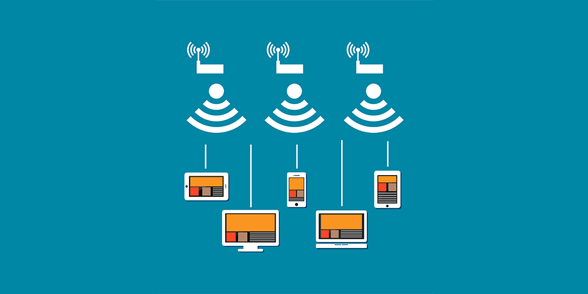

Cursos
Administração
Edificações
Desenvolvimento de sistemas
Enfermagem
Manutenção e Suporte em Informática
Turismo Receptivo
Cursos
Administração
Edificações
Desenvolvimento de sistemas
Enfermagem
Manutenção e Suporte em Informática
Turismo Receptivo
Etec Adolpho Berezin

etecab@etec.sp.gov.br
(13) 3448-3800
(13) 3448-3837
(13) 3448-3818
Redes Sociais


Manutenção e Suporte
Manutenção de redes
O técnico é o profissional responsável por instalar e configurar dispositivos de comunicação digital e programas de computadores em equipamentos de rede. Ele irá montar, configurar e fazer a manutenção de microcomputadores, bem como a instalação e configuração de sistemas operacionais e dispositivos de redes.
Configuração de dispositivos de redes
Instalação, manuseio e manutenção

redes de computadores
Help desk
o serviço de apoio a usuários para suporte e resolução de problemas técnicos, informática, telefonia e tecnologias de informação, ou pré e pós vendas. Este apoio pode ser tanto dentro de uma empresa (profissionais que cuidam da manutenção de equipamentos e instalações dentro da empresa), quanto externamente (prestação de serviços a usuários), por meio de um sistema de gerenciamento de incidentes ou call center.

Ajuda na resolução de problemas
Call center

Informática
Manutenção de computadores
Executa configurações de sistema operacional, realiza limpeza e conservação dos equipamentos. Faz testes preventivos operacionais e de segurança nos equipamentos e demais periféricos. Realiza atendimentos de manutenção em postos externos, faz emissão de relatórios técnicos de visitas e laudos de atendimento de manutenção.

Manutenção, laudos , testes

Hardwares
Sistemas operacionais